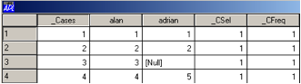
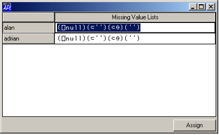
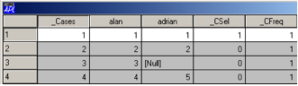
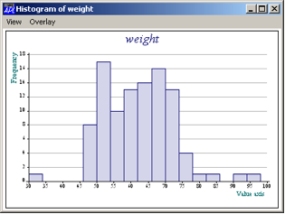
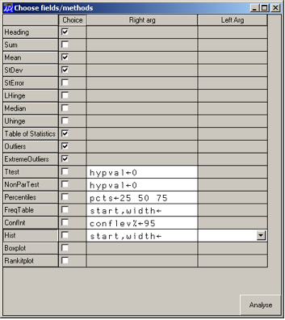
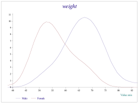
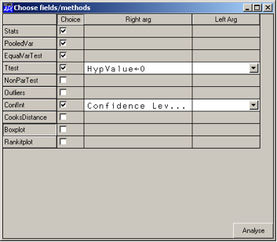
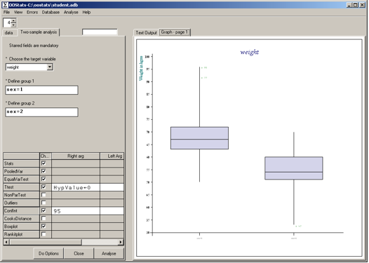
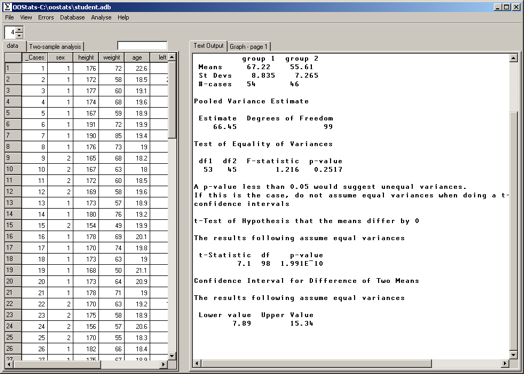

OOStats – A statistics facility for users of Dyalog APL
Vector 25:1, page 104
At the Dyalog Users Conference (Elsinore 2008) I reported my first efforts at providing facilities for statistical computing using Dyalog APL’s object-oriented facilities. Since then, the software has expanded and consolidated to such a point that I would like to invite others to use it, suggest suitable extensions to it (and even provide them). This article is therefore a brief introduction to it.
The starting point¶
From the beginning, I knew that if the software were to be used for real, then it had to cope with missing values. Post retirement, I did some consultancy work, and was invariably given a very messy Excel sheet of data purporting to be a database! Importing this into APL and hitting a column of figures with a simple Mean program had about a 0.1% chance of working! Also, having worked with colleagues into analysing survey data, I knew that as well as system missing values, it was useful to have user-declared missing values for a particular variable (so that analyses of what type of respondents tended to leave a particular database field empty are possible).
So the starting point was the development of a simple database object that allowed the user to do the usual database operations e.g. selecting cases, computing new variables, deleting cases et cetera. In doing this early work, I soon felt it important to be able to use the graphical user interface (e.g. for declaring variable formats) as well as using the session. (This was fortuitous, as later on, they were incorporated into a full GUI wrap-round that emerged naturally from the object-oriented approach adopted.)
Creating a database from APL¶
Creating a database from APL should be easy – it is. Using the object code s_db in the workspace oostats:
The user variables are referred to by names as listed in the public field:
In addition, however, there are three variables that keep a track of the case number, whether that case is selected, and the case frequency:
(Occasionally, it is helpful to be able to declare a case frequency – for example if analysing a contingency table given from external sources.)
To look at the database:

System missing values are kept in a field: db_SM
and the collection of missing values for each of the user variables is contained in
Each of these lists is a string (to make it easier to see just what the missing values are) and may be added to:
Alternatively, the method db.GetMissVals provides a grid object for entering further values:

After such an allocation, any statistical method using the variable alan would filter out values equal to 2.
Selecting cases is programmed as a method in s_db, and is straightforward:

In the grid view of the database, cases not selected are in grey – note that case 3 has not been selected because I take the view that a null value cannot be included in the comparison.
Statistical Methods¶
As well as the above (and other) database methods, the object code s_db contains a number of statistical methods:
db.StatsMethods
UniqueFrequency Unistats Regress TwoSampleMeans CrossTabs Multistats
MatchedPairs OneWayAnova Scatterplot Table Boxplot TimeSeries
OneWayManova
With one exception (the Unistats method) each statistical method creates a sub-object db.s which has its own fields and methods. For our first example, consider UniqueFrequency, useful when investigating a database for the first time – it lists unique values of a variable and their frequency (missing values are included here):
db.UniqueFrequency 'adrian'
Sub-object s created from all cases
)cs db
#.[s_db]
s.UniqueValues
1 2 5 [Null]
s.Frequencies
1 1 1 1
(With a view to printing out tables later, a table is returned as a vector of column headings and then the body of the table – #.Tab simply glues them together adjusting lengths as necessary.)
The Unistats sub-object¶
Perhaps the most frequently used statistical method in s_db is the Unistats object which allows you to calculate means and standard deviations etc for a single variable. Using this from the session, I took the view that one might want to do this for more than one variable, so I decided to create an object at the root level called by the name of the variable.
db.SelectCases 1
(re-instates all cases)
db.Unistats 'adrian'
Created object #.adrian.?
Currently, # cases excluded = 1
(In creating this object, any value that is in the list of missing values for the variable is filtered out. The ability to do this automatically when creating a statistical object is really important. For example, when fitting different competing regression models, cases will be included or excluded as each new model is specified.)
We can now type:
The choice of options for the Unistats method reflects my own personal outlook on the process of statistical data analysis – in particular the important role that graphics plays in understanding what is going on and therefore what analysis is (or is not) relevant. So, for example, with Unistats – there are three graphs – a histogram (Hist), a Boxplot (useful for identifying cases that are outliers) and a Rankitplot (a visual check on whether or not the data is Normally distributed). Other options are easily added.
Finding out about the options available¶
With any statistical object, it is useful to document what options are available, and also to provide a Script (a nested matrix) for documenting output. This is driven by the function #.Explore. For example, the statistical method UniqueFrequency has a Script matrix
#.Ed.freq
1 1 Heading 1 2 Heading
1 0 UniqueValues 1 2 'Unique Values'
1 3 UniqueValues
1 0 Frequencies 1 2 'Frequencies'
1 3 Frequencies
1 1 FrequencyTable 1 2 'Frequency Table of all Unique Values'
1 4 FrequencyTable
listing options (plus information on left and right arguments) with the last column specifying executable commands for output if that option is selected. (The matrix itself may be constructed through a specially designed GUI nested matrix editor #.Ed.Edit.)
The object itself accesses this information through a field s.Options:
To see this working more effectively,
Open 'c:\oostats\student.adb'
Object 'db' has been created using s_db from file c:\oostats\student.adb
(A database is saved in an APL component file together with its attributes.)
db.UserNames
sex height weight age left react sort
db.Unistats 'weight'
Created object #.weight.?
Currently, # cases excluded = 0
weight.Options
Left arg Option Right arg
Heading
Sum
Mean
StDev
StError
LHinge
Median
Uhinge
Table of Statistics
Outliers
ExtremeOutliers
Ttest hypval←0
NonParTest hypval←0
Percentiles pcts←25 50 75
FreqTable start,width←
ConfInt conflev%←95
Normal,Exponential,Gamma… Hist start,width←
Boxplot
Rankitplot
Right arguments (numeric) are indicated through a text vector, thus the Ttest option has a right argument which specifies the hypothesis value required. Left arguments, where they exist, are a list of names indicating categorical options – thus for the Histogram method, a left argument of 'Normal' would add a normal-density overlay to the histogram.
Here are some examples of the options:

Note the menu item View which activates the Causeway viewer, and Overlay which gives you a choice of fitting to the data a Normal, Exponential, Log-Normal, Gamma distribution or a smoothed version of the histogram (the left argument options to Hist).
If you are unsure of which options to use, then you can use #.Explore with right argument equal to the object to be explored. This allows the user to tick appropriate options and obtain suitably annotated output:

If we pursue the information on weight of students further, we can recognise that there are male and female students in the same data set, so this histogram is a mixture of two distributions (one for each sex). To investigate how they differ, we need either a boxplot (see later), or two histograms on one axis (not advisable and so not provided) or two smoothed histograms. Both options are available if we use the statistical method TwoSampleMeans:
db.TwoSampleMeans 'weight' 'sex=1' 'sex=2'
Sub-Object s created using s_twosamt
db.s.FreqDensities 4
(The parameter is a smoothing parameter – think of it as a class-width for a histogram.)

Note that the labels in the key are produced from the database, which has a field db.ValueLabels – a vector of matrices, one for each user variable:
(n.b. there is only one variable here with value labels)
The resulting graph gives a clear picture of how the distributions of male and female weights differ – a formal test of the equality of means may be performed (either assuming approximate normality or using a non-parametric test):
which tells us that we can assume equal variances (as suspected from the two densities above)
If you prefer to use the #.Explore method, then it is a little easier to see what is going on

The chosen options are then performed and reported back with annotations:
Two-sample analysis for variable weight
Group 1 is defined by the statement sex=1
Group 2 is defined by the statement sex=2
Sample Statistics
group 1 group 2
Means 67.22 55.61
St Devs 8.835 7.265
#-cases 54 46
Pooled Variance Estimate
Estimate Degrees of Freedom
66.45 99
Test of Equality of Variances
df1 df2 F-statistic p-value
53 45 1.216 0.2517
t-Test of Hypothesis that the means differ by 0
The results following assume equal variances
t-Statistic df p-value
7.1 98 1.991E¯10
95% Confidence Interval for Difference of Two Means
The results following assume equal variances
Lower value Upper Value
7.89 15.34
The Graphic User Interface¶
Whilst driving a statistical analysis from the keyboard is a familiar environment for statisticians, a GUI interface is also desirable. This is provided by the object code s_guidb, which inherits the properties and methods of s_db. Because of the inheritance, and because all the database facilities already have a GUI interface (e.g. db.GetMissVals) it is straightforward to incorporate them into a menu-driven system.
For the statistical methods, forms are necessary to declare the appropriate variables to spawn the statistical object – once the object has been created, the grid object used in #.Explore, provides the user choice for the statistical options required from that object, and the output from Explore gives the output required for an RTF-viewer. This is illustrated by using the male and female weights example again.
Having selected from the Analyse menu, the option Two-sample analysis, we can select the target variable, specify the two groups, and create the object using the Analyse button. The default options can then be executed by pressing Do Options on the tabbed subform. The boxplot is generated on the right-hand tabbed subform as seen below.

The hidden tabbed sub-forms reveal the database grid object and the text output:

Users wishing to extract output into, say Microsoft Word, can
- copy and paste from the RTF Viewer,
- paste any of the graphs produced (some objects may have up to three different graphs) from the Causeway Viewer available on the
Viewmenu and - print a Newleaf report of all (or selected parts) of the activity in a session.
The Help menu provides a set of Help files (standard compiled html) produced using Adrian Smith’s documentation software. Other database features not mentioned include formatting the variables (including showing dates and value labels), ordering cases, ordering the variables, using colour in the grid to indicate the spectrum of small to large values, and the ability to edit the grid if required.
The scope of OOStats¶
Currently, OOStats is for APLers using Dyalog 12.1. Some options for further development are obvious:
- the addition of further statistical methods to
s_db - the addition of further options to any of the existing statistical methods
- packaging it up to provide a stand-alone product (it would be necessary to provide some cover functions for use in e.g. Case Selection or Computing a new variable)
- Regularising the extended output by the creation of a dictionary thus allowing output in different languages.
(Readers may wish to extend the list!)
The table below lists the statistical scope to date – note that all the analytic power of ASLGREG is available (facilitating some quite advanced analyses on multi-way contingency tables, logistic regression etc.) and I would hope that there is much here that statistical APLers could use.
| Statistical Method | Options | ||
|---|---|---|---|
| Boxplot | Facilitates boxplots for one or more variables including classifying variables (This is a cover-method to interface with boxplots provided on other sub-objects) | ||
|
CrossTabs Analysis of two-way frequency tables |
Observed Table ProportionsVar1ByVar2 ProportionsVar2ByVar1 |
Expected StandResid ChiSquareTest FullTable |
ViewFullTable BarchartVar1ByVar2 BarchartVar2ByVar1 TowerChart |
|
Table Provides a table of univariate statistics within groups specified by one or two variables |
Table Boxplot |
||
| MatchedPairs | Creates a Unistats object on the difference of two variables – see below | ||
|
MultiStats Creates an object for the univariate or multivariate analysis of a group of variables |
#.Cases Mean Std Dev 5%ile 25%ile 50%ile |
75%ile 95%ile UnivariateStats MultivariateStats CovarianceTable Outliers |
ExtremeOutliers TsquareTest TestHypEqualMeans CorrelationMatrix CorrelationTable |
|
OneWayAnova Analysis of one variable split into two or more groups |
MeansTable EqualVarTest AnovaTable Ftest |
GroupContrasts CooksDistance Outliers |
FreqDensities Boxplot Rankitplot |
|
OneWayManova As above, but for a group of correlated variables |
MeanVector GroupMeanMatrix GroupMeansTable WGCovarianceMatrix |
BGCovarianceMatrix HonogeneityTest WilksLambda HotellingsTsquare |
ParallelProfileTest GroupContrasts MeansPlot CanonicalPlot |
|
Regress Regression and Generalized Linear Modelling |
CurrentModel AnovaTable Ftest DevianceTable EstimateTable CovarianceMatrix |
CorrelationMatrix Outliers Diagnostics FittedValues StandardisedResiduals TResiduals |
Leverage CooksDistance Stepwise Parityplot Fitplot RankitPlot |
| Scatterplot | Allows the building of any regression or generalized linear model involving a y-variable, one regressor variable, and one factor variable showing a scatterplot with fitted model | ||
|
TimeSeries Fits auto-regression or moving average time-series models |
Acf Pacf |
ARModel MAModel |
ARMAModel Plot |
| TwoSampleMeans |
Stats PooledVar EqualVarTest Ttest |
NonParTest Outliers ConfInt CooksDistance |
FreqDensities Boxplot Rankitplot |
|
UniqueFrequency Frequencies of unique values |
UniqueValues | FrequencyTable' | Frequencies |
|
Unistats Statistics for one variable |
Sum Mean StDev StError Min Lhinge Median |
Uhinge Max Outliers ExtremeOutliers BoxCoxLL Ttest NonParTest |
Pctile FreqTable ConfInt Hist Boxplot Rankitplot |
Acknowledgements¶
I am indebted to Morten Kromberg and Gitte Christensen of Dyalog Ltd for encouraging the work on this project and for the opportunity to present a preliminary version at the 2008 Users Conference. As with nearly all my endeavours in APL, I have benefitted enormously from the large APL toolkit of Adrian Smith. Specifically here, is the use of Rainpro, Newleaf and the Documentation software, but not Causeway – the GUI coding, however inept, is my own!
Attachments¶
- Dyalog APL workspace, and examples of datasets:
oostats.zip - Compiled HTML Help file:
oostats.chm